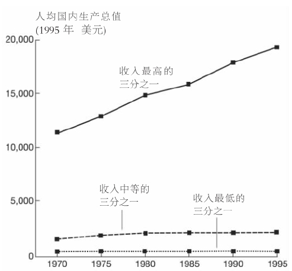
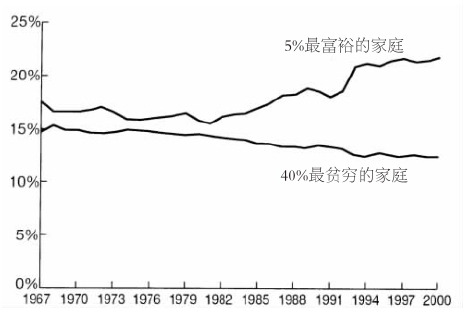
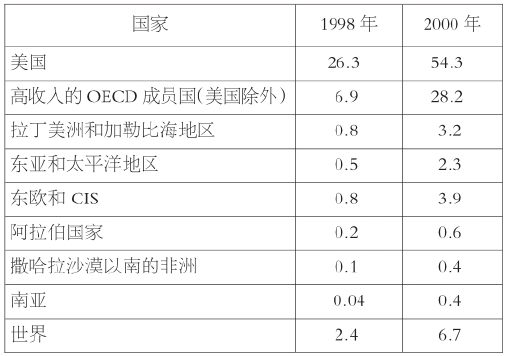

意识形态可以定义为这样一个体系，它包含了广泛共享的观念、模式化的信仰、具有导向性的规范和价值观以及特定人群认可为真理的理想。意识形态不仅按照世界本来的样子，而且按照世界应该有的样子，为个人提供了一幅比较连贯的世界图景。这样一来，意识形态就有助于把高度复杂的人类经验组织成相当简单却经常被歪曲的形象，并以此作为社会和政治行动的指南。这些被简化和歪曲了的思想常被用来使某些政治利益合法化，或维护占统治地位的权力结构。为了在社会中渗透他们喜欢的规范和价值观，意识形态主义者向公众递交了一个议程，它已经限定了该讨论什么、该主张什么以及该询问什么。他们面对公众讲述故事和叙事，用于说服、赞扬、谴责，区别“真理”与“谬误”，并区分“好的”与“坏的”东西。这样，意识形态就能通过概括化的行为准则和要求来组织和确定人类活动的方向，把理论与实践联系起来。
如所有的社会进程一样，全球化也包含了一个意识形态向度，充满了关于这一现象本身的一系列规范、要求、信条和叙事。例如，全球化是一件“好”事还是一件“坏”事的问题，就在意识形态领域引发了激烈的公共讨论。因此，在探讨全球化的意识形态向度之前，我们应该在全球化 与全球主义 之间做重要的分析和区别，前者指各种评论者以不同的甚至是相互矛盾的方式来描述不断强化的全球相互依存的社会进程，而后者则是指赋予全球化这一概念以新自由主义价值观和意义的意识形态。
我们在第七章将会看到，对新自由主义价值观与全球化二者之间的联系，各社会群体并没有达成一致意见；相反，他们企图赋予这一概念以不同的规范和意义。然而，迄今为止，这些群体所表达的理想并不能动摇全球主义中新自由主义话语的统治地位。后者在全世界的传播主要依靠的是北半球强大的社会力量，这一阵容主要由集团公司的经理、大型跨国公司的主管人员、集团公司的说客、新闻记者、公共关系专家、面向大众读者写作的知识分子、国家官僚及政客组成。作为全球主义的主要拥护者，这些人物使得公众话语中充斥着理想化的形象——一个保护消费者的自由市场。
图10 微软总裁比尔·盖茨，世界上最有影响力的全球主义倡导者之一。
2002年，美国新自由主义杂志《商业周刊》推出了一则关于全球化的封面报道，它包含了如下声明：“近十年来，政界与商界的领导者企图说服美国公众，让他们相信全球化的好处。”通过援引2000年4月一份关于全球化的全国民意调查结果，文章继续报道说，大多数美国人似乎对这个问题有两种看法：一方面，有65%的接受调查者认为，全球化对美国和世界其他各地的消费者和商业来说都是一件“好事”；另一方面，他们担心全球化可能会使美国的就业率大幅滑坡；此外，有70%的接受调查者认为，与低收入国家签署的自由贸易协定是美国工资下降的原因。文章的结尾对美国政界和商界的领导者发出了颇有火药味的严重警告，认为对反全球主义势力的论点不可掉以轻心。为了减少人们对这一问题不断产生的担忧，美国决策者应该更有效地突出全球化带来的好处。毕竟，公众对全球化持续的担忧会产生严重的反作用，进而危害国际经济的健康运行和“自由贸易事业”。
这一封面报道包含了两条与全球化的意识形态向度相关的重要信息。第一，它公开承认了政界与商界的领导者在积极地向公众兜售他们自己中意的全球化版本。实际上，《商业周刊》那篇文章的作者是以积极的态度来看待对全球化观点和形象的构建的，认为它们是实现基于自由市场原则之上的全球秩序必不可少的工具。无疑，这种全球化的正面景象对公众舆论和政治选择具有深远的影响。如今，为了实施具有市场倾向的政治议程，新自由主义决策者已不得不变成诱人的意识形态集装箱的设计专家。鉴于商品交换构成了所有市场社会的核心活动，全球化话语本身也已经转变成了一种特别重要的商品，专门供公众消费。
第二，《商业周刊》封面报道的调查数据表明，在不断全球化的世界中，人们的个人经历与他们对全球化的规范性定位之间存在着认识上的明显差异。人们该如何解释，为何有相当一部分接受调查者担心全球化会给他们的生活带来经济上的负面影响，但同时却认为全球化是一件“好事”？显然，问题的答案就是意识形态。全球化光彩夺目的新自由主义叙事已经在很大程度上塑造了全世界的公众舆论，即使人们的日常经历呈现出的场景并不皆如它们渲染得那样美好。
北半球富国的十几家影响最大的杂志、报纸及电子媒体，如《商业周刊》、《经济学家》、《福布斯》、《华尔街日报》与《金融时报》，为读者灌输了众多固定不变的带有全球主义的主张。全球主义已经成为一些社会政治思想家所谓的“强势话语”——一种臭名昭著的难以抵制的话语。它有强大的社会势力支持，这种势力预先选定了那些被认为是“真实的”东西，从而相应地来塑造世界。不断地复述全球主义的主要主张和口号能够产生它们所表述的东西，随着更多新自由主义政策的执行，全球主义的主张更加牢固地深入到了公众心里。
在本章的余下部分，我们将认识和分析五大意识形态主张，它们频频出现在有影响的全球主义倡导者的谈话、演讲和著作中。需要指出的是，全球主义者本人也是为了兜售他们的政治和经济日程才形成这些主张的。或许，并没有一段全球主义的演讲或一部著作能同时涵盖下面所讨论的五个论断，但它们至少都包含了其中的一些主张。
主张一：全球化就是市场的自由化与全球一体化
如所有意识形态一样，全球主义从一开始也试图建立对这一现象的来龙去脉的权威叙述。对新自由主义者来说，这根植于自我调节的市场观念，它是未来全球秩序的框架。如第三章所指出的，新自由主义者试图培养公众的意向，使他们毫无批判地把“全球化”与他们所宣扬的市场自由化的好处联系起来。特别值得注意的是，他们说全球市场的自由化与一体化是一种“自然”现象，能够促进世界的个体自由和物质进步。以下是三个例子。
《商业周刊》，1999年12月13日
克林顿政府的美国前副国务卿琼·斯皮罗
英国记者彼得·马丁
这一主张的问题在于，全球主义的使命——市场的自由化和一体化——只有通过对市场进行行政 规划才能得以实现。因此，全球主义者必须随时准备利用政府的力量 来削弱和消除那些限制市场的社会政策和机构。鉴于只有强有力的政府才能完成转变当前社会结构这一野心勃勃的任务，市场自由化的成功取决于集权政府的介入 和干涉 。然而，这样的行为与新自由主义理想化地对政府职能进行限制形成了强烈反差。当然，全球主义者确实期望政府在执行他们的政治日程方面扮演非常积极的角色。在20世纪八九十年代，美国、英国、澳大利亚和新西兰新自由主义政府的积极参与表明了强大的政府行为在策划自由市场方面的重要性。
而且，宣称全球化就是市场的自由化与全球一体化，就会将一个原本偶然的政治计划固定为“事实”。全球主义者的成功在于他们说服了公众，让其相信他们关于全球化新自由主义的叙事，正是对所要分析的情况的客观的或至少是中立的判断。诚然，新自由主义者或许确实能够为市场的“自由化”提供某种“经验性证据”。但是，市场原则的蔓延真的就是由于全球化与市场扩张之间存在着某种形而上的联系吗？或者，它之所以发生，难道是因为全球主义者拥有政治和话语权力，从而能大致按照自己意识形态的公式来影响这个世界——自由化+市场的一体化=全球化？
最后，这一对全球化过于经济化的表述削减了此现象的多维性。全球化的文化与政治向度仅作为依赖全球市场流动的从属进程而被提及。即使相信全球化的经济向度具有决定性作用，人们也没有理由认为这些进程必然与撤销对市场的管制有关。与此相反，另一个观点则可能会把全球化与全球性监督管理结构的创建联系起来，这个结构会使市场对国际政治机构负责。然而对全球主义者来说，当与最具限定性的法律与机构做斗争时，把全球化说成是一项能解放并整合全球市场以及从政府控制下解放个人的事业，是他们获取公众支持的最好方式。只要能成功地向大多数人兜售他们对全球化新自由主义式的见解，他们就能维持一种有益于自己的社会秩序。对那些仍然怀疑全球主义的人来说，全球主义者还有另外一个胸有成竹的主张——为什么要去怀疑一项带有历史必然性的进程呢？
主张二：全球化是必然的、不可逆转的
全球化是历史的必然，这一想法乍一看似乎很不适合一个基于新自由主义原则之上的意识形态。毕竟，在整个20世纪，自由主义者和保守主义者都对马克思主义者提出了批评，因为后者的决定论主张贬抑了人的自由意志，而且忽视了非经济因素对社会现实的影响力。然而，全球主义者依靠的也是一个相似的历史必然性叙事，它是单一因果的和经济主义的。根据全球主义者的解释，全球化反映了技术创新驱动下不可逆转的市场力量传播的必然性。让我们来思考一下以下的陈述：
美国前总统比尔·克林顿
联邦快递公司董事长和总裁弗雷德里克·W.史密斯
印度企业家拉胡尔·巴贾杰
新自由主义者把全球化描写成某种就像天气或重力一样的自然力量，这使得全球主义者更易于让人们相信，想要生存和发展就必须适应市场规律。因此，宣扬全球化必然使关于全球化的公共话语变得非政治化了。新自由主义政策被说成是超越政治的，它们只是在执行自然规律而已。这里的寓意就是，人们并非根据一系列的选择行事，而只是在履行世界市场的法则而已，是这些法则要求消除政府的控制。这正如英国前首相玛格丽特·撒切尔曾说过的，“我们别无选择”。如果人们对经济和技术力量的自然流动无计可施，那么政治团体就应该默许并充分利用这一不可改变的境况。反抗将是不合乎自然规律的、非理性的，而且是危险的。
必然性的观念也更容易说服公众去共同承受全球化的重负，从而让他们支持一个经常被新自由主义政客利用的托词：“由于市场，我们才削减社会规划。”德国前总统罗曼·赫尔佐克通过电视呼吁全国，全球力量不可抗拒，它迫使每个人都必须做出牺牲。当然，赫尔佐克总统并没有讲明白等待大股东和公司执行官的将是怎样的牺牲。最近的例子，如美国安然公司轰动一时的破产表明，牺牲将极有可能很不均衡地由那些工人和雇员承担，因为新自由主义的政策会使他们失去工作或社会福利。
最后，宣称全球化是不可避免的和无法抵制的，其根源在于一种更宏大的进化论话语，这一话语赋予某些国家以特权地位，让它们处在从政治控制下解放市场的前沿。如第五章所讨论的，乐天派的鼓吹全球化者经常把全球化当做一个委婉语来使用，它代表了世界不可逆转的美国化。由此看来，全球主义力量似乎复活了19世纪赫伯特·斯宾塞和威廉·格雷厄姆·萨姆纳之类的人们宣扬的英美先锋主义范式，古典市场自由主义的主要因素在全球主义那里无一不有。我们发现了西方文明、自我调节和自由竞争的经济模式、自由企业的优势、国家干预的缺陷、放任主义原则，以及适者生存和不可逆转的进化过程中无情的自然法则。
主张三：没有人对全球化负责
全球主义的决定论语言提供了另一个话语优势。如果市场的自然法则预先规定了新自由主义的历史进程，那么全球化并不反映某一特定社会阶级或集团任意的议程。在这种情况下，全球主义者只是在执行一种具有超验力量的不可改变的律令。人并不对全球化负责，而是市场和技术对全球化负责。人类的某些行为会加速或延缓全球化，但最后的分析证明，市场那只看不见的手总是会表现出它高超的智慧。下面是关于这一观点的三种表达方式：
美国经济学家保罗·克鲁格曼
《纽约时报》记者，获奖作家托马斯·弗里德曼
高盛公司副董事长罗伯特·霍马茨
但只有从表面意义来看，霍马茨先生的话才是正确的。虽然并不存在由单一邪恶势力控制的有意识的阴谋，但这并非是说没有人对全球化负责。全球市场的自由化和一体化并非是在人类的选择领域之外进行的。如第三章所示，全球主义者在全世界整合市场，并使市场脱离国家的干预计划，创造了也维持着不均衡的权力关系。美国是迄今为止世界上最强大的经济和军事力量，而且最大的跨国公司的总部也都在北美洲。这并不是说美国绝对控制着全球化的宏大进程，但这的确 表明，在很大程度上，全球化的实质与发展方向受到了美国内外政策的影响。
总之，有人认为无人领导全球化进程，这一说法并没有反映当今世界的现实；相反，这一说法为维护和扩张北半球国家利益的政治议程服务，同时，也保护与它联合的南半球的精英力量。如历史必然性的言论一样，无人负责的观念企图使关于这一话题的公共讨论非政治化，从而解散反全球主义运动。一旦大部分人接受了这种全球主义的形象，即它是一种自我运行、自我调节的力量，要组织反抗运动就会变得相当困难。当普通民众不再相信有选择另一种社会格局的可能性时，全球主义将具有更大的能力来建构被动的消费者身份。
主张四：全球化对每个人都有益处
这一主张是全球主义的核心内容，因为它为应该把全球化看成是“好”事还是“坏”事这一关键的规范性问题提供了一个肯定的答案。全球主义者经常把他们的论点与所谓的市场自由化带来的好处联系起来：全球生活水平的不断提高、高效能的经济、个人自由以及史无前例的技术进步。下面就是几个这类的说法：
美国联邦储备委员会主席艾伦·格林斯潘
英国石油公司董事长彼得·萨瑟兰
联合技术公司首席执行官乔治·戴维

穷国与富国收入悬殊，1970——1995年。
资料来源：世界银行，《1999/2000年世界发展报告》。
然而，戴维先生绝没有表明他这番话背后的意识形态假定。“我们 ”确切地说是指谁？谁“证明了 ”新自由主义非常“有 效 ”？“有效 ”是什么意思？然而，实际上存在着与此相反的确凿证据。市场过度控制社会和政治将导致的后果是：全球化的机遇与回报并不均衡，它以牺牲大众为代价把权力与财富集中在了一小部分人、地区和公司的手里。即使是来自世界银行的数据也表明，近来，国家间的收入差距实际上正在以史无前例的速度扩大。
《联合国人类发展报告》1999年和2000年版的数据表明，在1973年全球化开始之前，最富国与最穷国的收入比率大约是44:1。25年后，这一比率增长到74:1。冷战结束后的这段时期，生活在国际贫困线以下的人数从1987年的12亿增长到了现在的15亿。如果当前的趋势继续下去，到2015年，这一数字将会达到19亿。这意味着，21世纪伊始，人类最底层有25%的人每年依靠不足一百四十美元维持生存。与此同时，1994到1998年，世界上200个最富的人的资本净值翻了一番，超过了一万亿美元。世界上三大亿万富翁的资产超过了所有不发达国家及其6亿人国民生产总值的总和。
即使在世界上最富有的国家内部，也同样能看到日益加剧的不平等趋势。例如，我们可以看看美国日益扩大的收入差距（见下图）。

家庭收入在美国总收入中所占的份额，1967——2000年。
资料来源：美国统计局，www.census.gov。
美国政治行动委员会的数量从1974年的400个上升到了2000年的9000个。为了继续维持新自由主义路线，这些集团的说客成功地给国会和总统施加了压力。超过三分之一的美国劳动力，即4700万工人，每小时工资不足十美元，与1973年相比，每年要多工作160个小时。全球主义者经常用美国20世纪90年代的低失业率来证明全球化带来的经济利益，其实这背后掩盖的是低工资和数以百万计的临时工人，这些临时工人无法得到全天的工作岗位，每周最低工作时间只要达到21小时，就被登记为在业。与此同时，大公司首席执行官的平均薪水却在大幅度提高。2000年，它比普通工人工资高416倍。1%的最上层美国家庭的财富超过了占总数95%的底层家庭的财富总和，这反映了过去20年来的巨大变化。
另外，还有很多迹象证明，追求全球利润实际上使穷人更难以享受到科技创新带来的好处。例如，到处都有证据表明，有一个日益扩大的“数字分水岭”把北半球与南半球分开了。
全球因特网用户占地区人口的百分比，1998——2000年

资料来源：《2001年联合国人类发展报告》。
（OECD：经济合作与发展组织；CIS：独联体）
关于全球公共医疗卫生服务不断加大的差距，来看看英国广播公司2000年10月31日的新闻报道：
少数几位承认全球不平等分配模式的全球主义者通常坚信，市场本身最终会纠正这些“不均衡”。他们坚持认为，在短期内，“插曲式的错位”是必然的，但它们最终会被全球生产力的巨大飞跃所取代。实际上，有一官方说法认为全球化有益于所有人，对这一官方说法不完全认同的全球主义者，必须承担他们的批评所带来的后果。因为公开批评他所在机构的新自由主义经济政策，曾获诺贝尔奖的世界银行前任首席经济学家约瑟夫·斯蒂格利茨受到了猛烈攻击。他认为，世界银行和国际货币基金组织强加于发展中国家的结构调整项目经常带来了灾难性的后果。他还指出，“市场理论家”曾利用1997——1998年亚洲金融危机来减弱国家干涉的可信度，从而在更大程度上促进了市场的自由化。1999年底，斯蒂格利茨因压力过大而辞职。五个月后，他与世界银行的顾问合同也被终止。
主张五：全球化促进民主在全世界传播
全球主义的这个主张来自一个新自由主义的设想——自由市场与民主同义。在公共话语中，这两个概念不断被确认为“常识”，常常无人质疑它们之间是否真的一致。这里有三个例子：
霍普金斯大学教授弗朗西斯·福山
美国纽约州议员希拉里·罗德姆·克林顿
《纽约时报》记者，获奖作家托马斯·弗里德曼
这些观点取决于民主的观念，它强调正式程序，如在经济和政治决策中以牺牲大多数人的直接参与为代价的选举。对民主的这种“空洞肤浅”的定义，反映了一种低强度的或“形式上的”市场民主，这种民主以精英主义的组织化模式为特征。实际上，把一些民主因素嫁接到普遍独裁的结构上，可以保证被选中的人免受来自大众的压力，从而实现“有效”的管理。因此，断言全球化会促进民主在全世界的传播，从很大程度上来说，是基于对民主的一种肤浅的理解。
而且，这一主张也必须面对许多与此相反的证据。让我们来看一则转引自《芝加哥论坛报》的报道，它是由“新经济信息服务” [6] 发布的。这表明，在竞争美国出口市场和美国对外投资的时候，民主国家并不占优势。
对全球主义五大主张批判性的研究表明，新自由主义关于全球化的说法从下面这个意义上说是与意识形态相关的，即它带有政治动机，有助于建构全球化的特定含义，借此保留和稳定现存的不均衡的权力关系。但是，全球主义意识形态的影响范围并没有局限于狭隘地为公众解释全球化的意义。全球主义由强大的叙事组成，它们兜售一个包罗万象的新自由主义的世界观，从而创造出具有集体性质的意义，并且塑造了人们的身份。
然而，无论是从西雅图到热那亚的大规模的反全球主义抗议，还是“基地”组织于2001年9月11日发动的恐怖袭击，都表明全球主义这一意识形态的扩张遇到了众多的抵抗。在下一章我们将会看到，21世纪的第一个10年似乎正迅速成为一个战场，关于全球化意义和走向的观点，在这里针锋相对。